total issue counts
feature pull request: 3
pullrequest: 12
docs pull request: 1
bugfix pull request: 8
issue: 1
bug report: 1
issue history
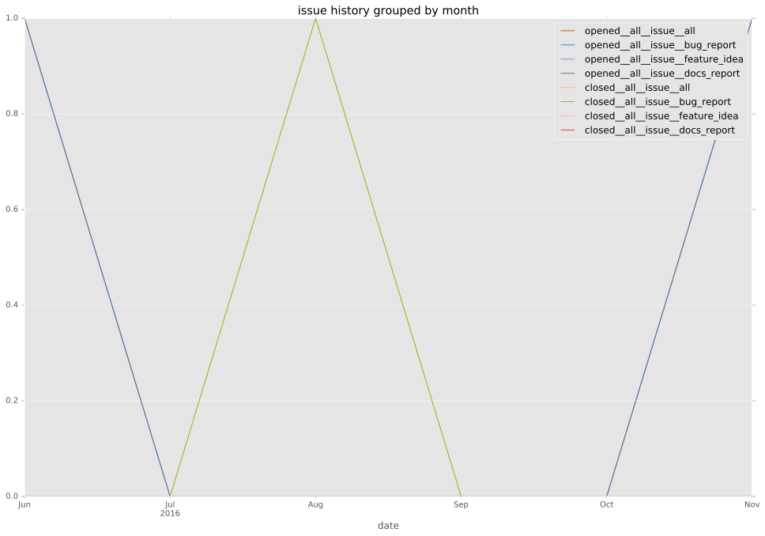
pullrequest history
 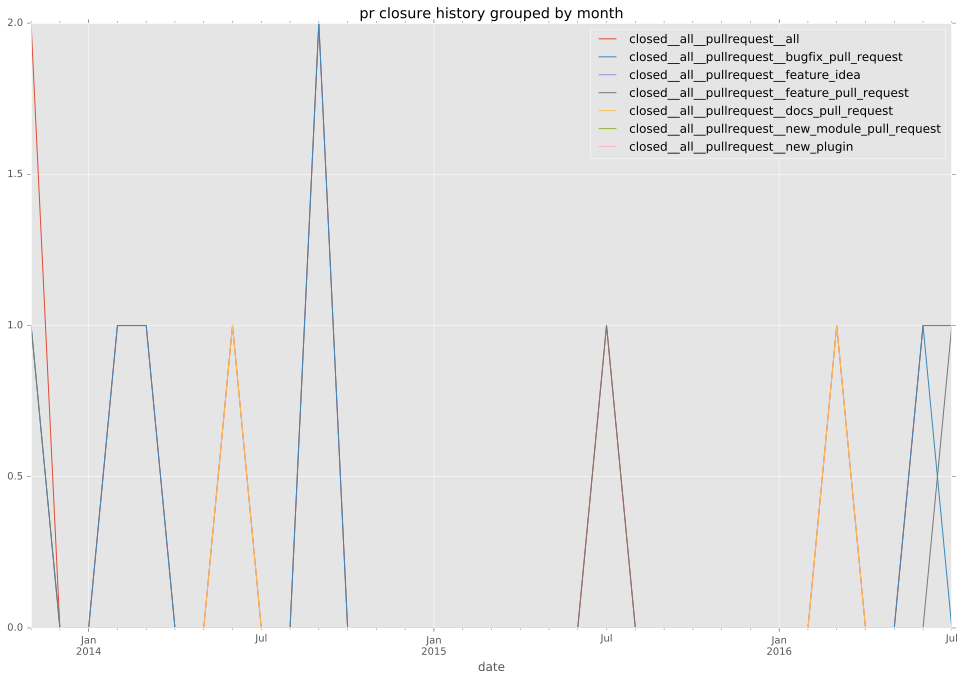
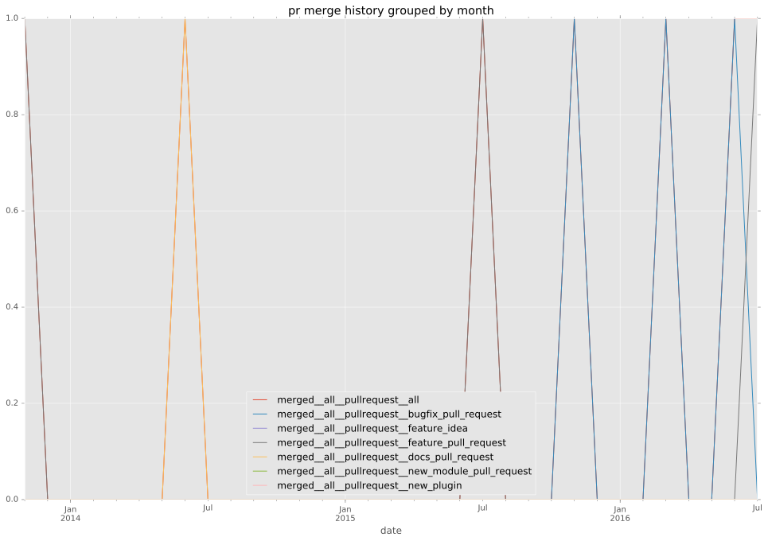
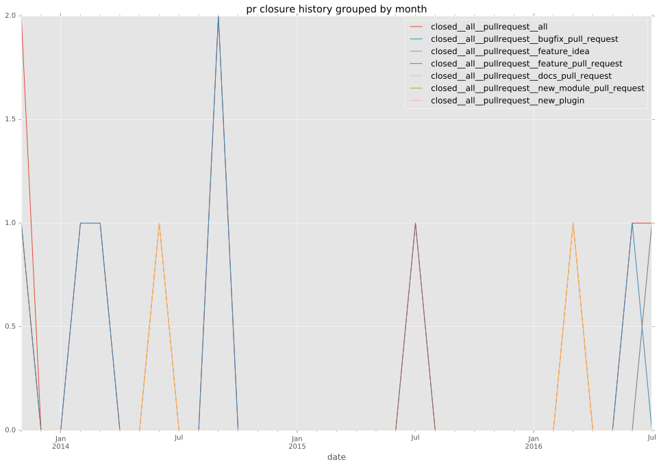
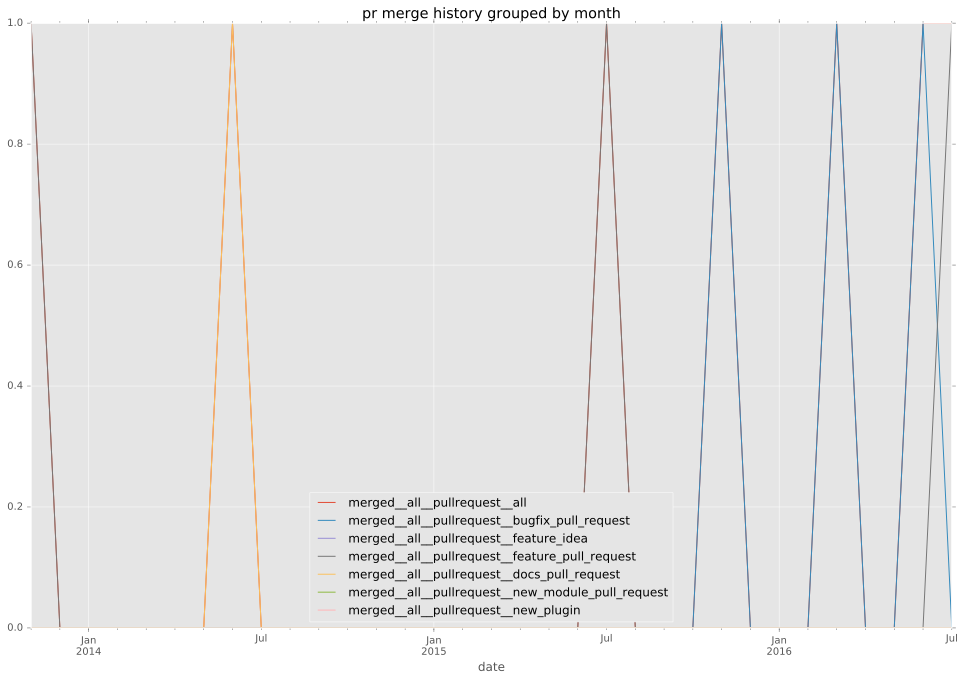
days open by issue type
bugfix pull request
count: 11
std: 0.522232967867
min: 0
max: 1
median: 0.0
mean: 0.454545454545
all
count: 20
std: 18.4733093379
min: 0
max: 54
median: 0.5
mean: 9.0
pullrequest
count: 0
std: nan
min: nan
max: nan
median: nan
mean: nan
docs pull request
count: 2
std: 0.0
min: 0
max: 0
median: 0.0
mean: 0.0
feature pull request
count: 6
std: 25.5238450604
min: 0
max: 54
median: 11.0
mean: 21.6666666667
issue
count: 0
std: nan
min: nan
max: nan
median: nan
mean: nan
bug report
count: 1
std: nan
min: 45
max: 45
median: 45.0
mean: 45.0
closures grouped by total days open
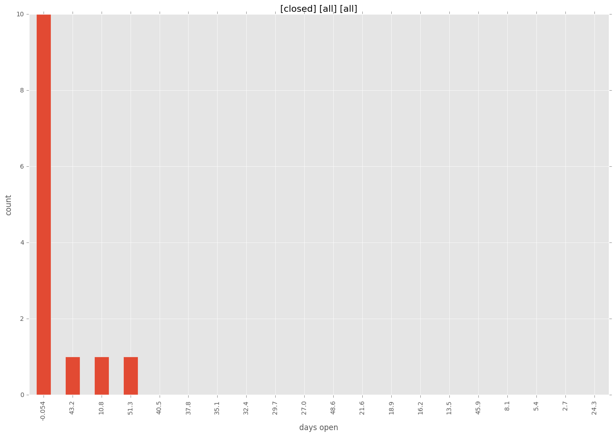
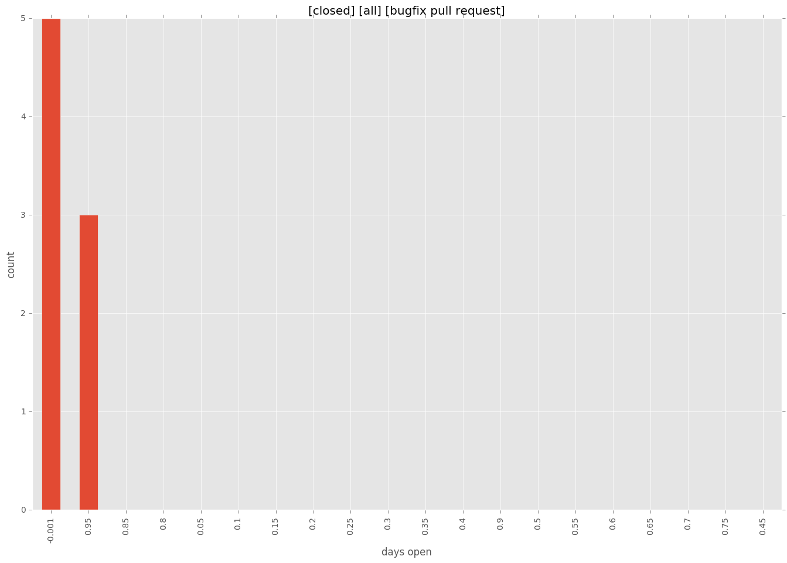
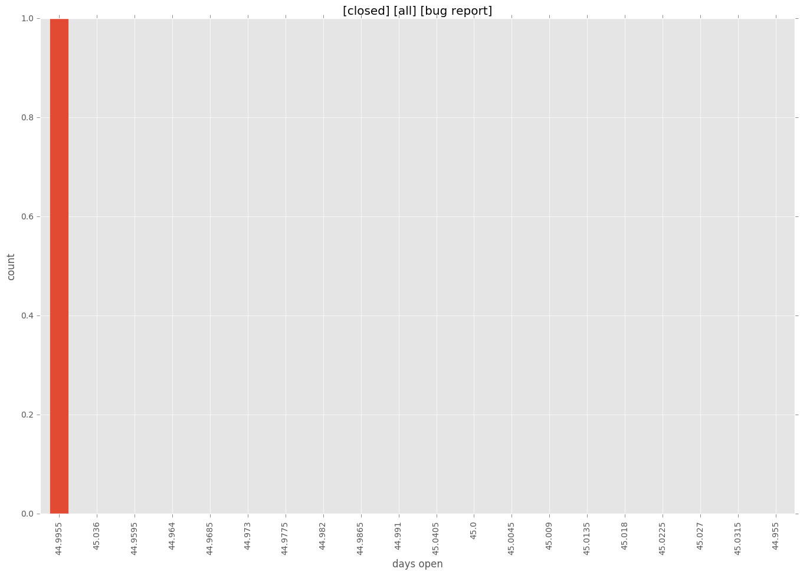

 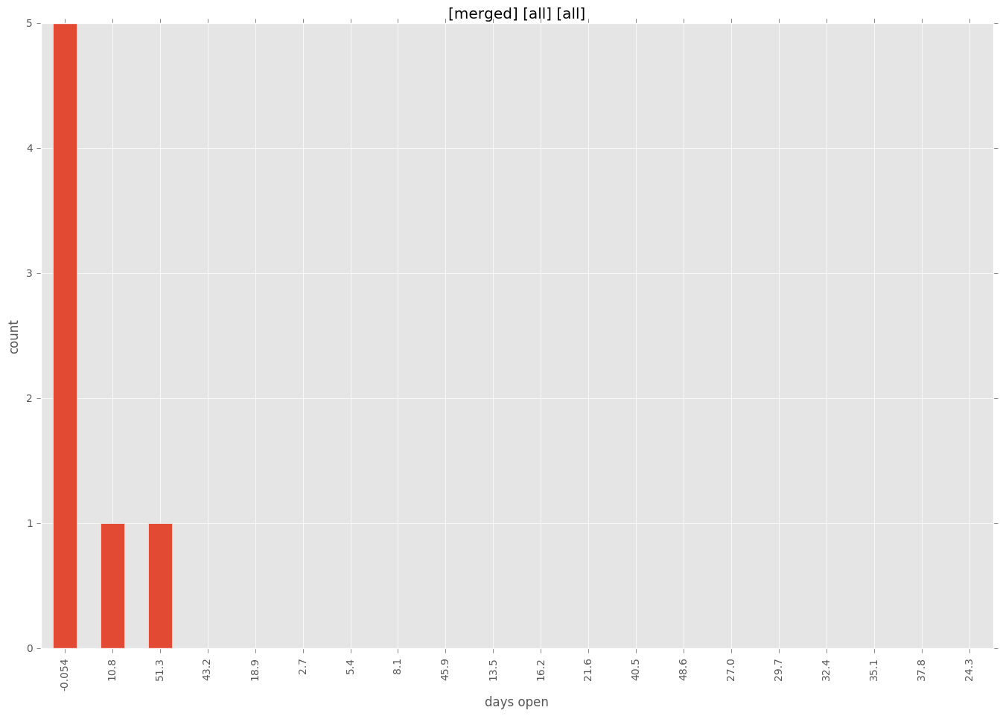
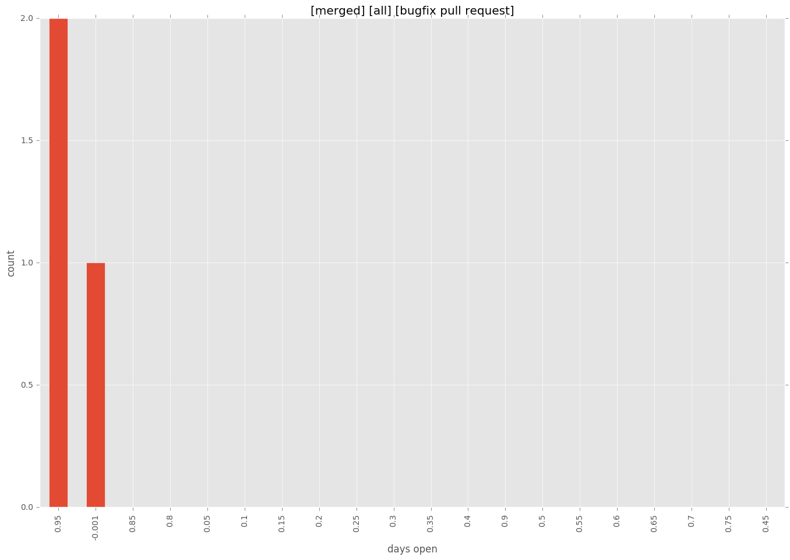
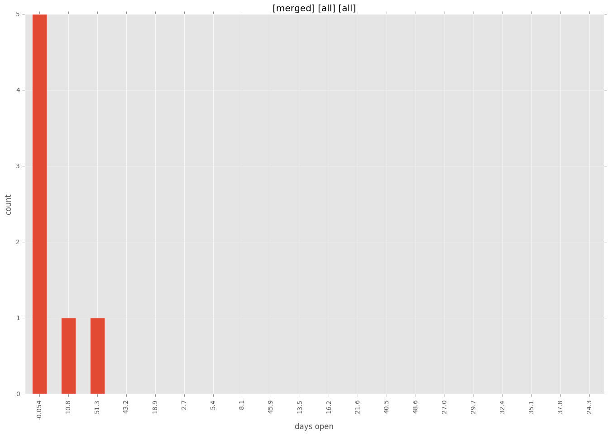
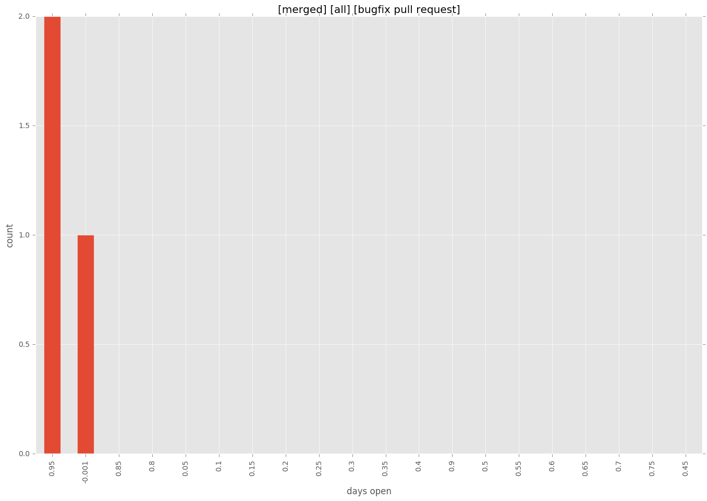